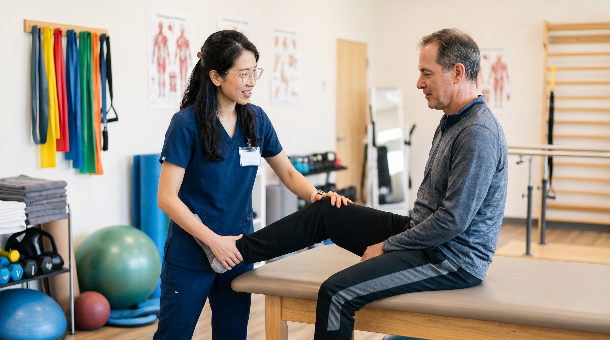
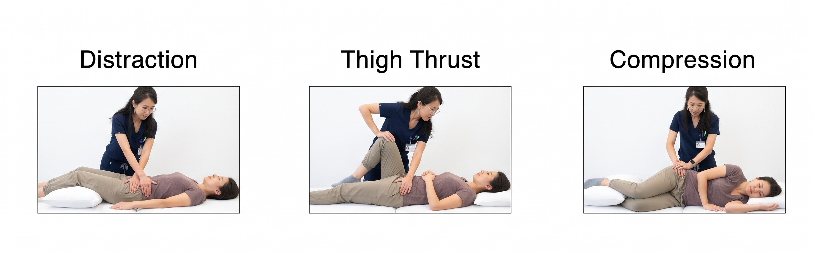
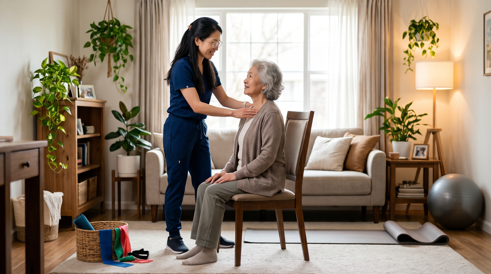

Philosophy of Healing & Thriving: Healing Beyond Pain, Thriving Beyond Recovery
At Healing & Thriving, I believe physical therapy is more than treating pain and injuries. Whether you are recovering from surgery, managing a chronic condition, improving your favorite sport, or simply wanting to move and feel better, my goal is to help you understand your body, build confidence, and develop the skills to take care of yourself.
Don't just recover. Discover what your body can do.
HEALING: Physical Therapy & Rehabilitation

Restoring movement, relieving pain, and rebuilding function.
1. Orthopedic Rehabilitation
Treatment for common musculoskeletal conditions, including back pain, neck pain, sacroiliac (SI) joint dysfunction, scoliosis, shoulder problems, knee arthritis, ankle sprains, and other joint or muscle conditions. Focuses on reducing pain, restoring mobility, improving strength, and returning to daily activities.

View more healing services
2. Post-Surgical Rehabilitation
Individualized rehabilitation following orthopedic surgeries, including rotator cuff repair, ACL reconstruction, total knee replacement (TKR), and other joint surgeries. Treatment focuses on restoring range of motion, rebuilding strength, improving movement control, and safely returning to daily activities and sports.
3. Pelvic Floor Rehabilitation
Personalized care to address pelvic floor muscle dysfunction, including pelvic pain, muscle weakness, poor coordination, and related movement difficulties. Focuses on improving pelvic floor awareness, muscle coordination, core stability, and functional control.
4. Lymphedema & Swelling Management
Treatment for swelling related to lymphedema, injury, or surgery. May include manual lymphatic drainage, appropriate compression strategies, therapeutic exercise, and self-management education to help control swelling and improve comfort and function.
5. Scar Management
Hands-on techniques and education to improve scar mobility, reduce tissue restrictions, and address discomfort or tightness following surgery or injury.
6. Kinesio Taping
Application of elastic therapeutic tape to provide additional support, enhance movement awareness, and assist with swelling management and muscle or joint function.
THRIVING: Wellness & Movement Enhancement
Move better, grow stronger, and enjoy an active life at every stage.
1. Bring Your Favorite Exercise to Me!
Your favorite sport deserves your best movement!
Bring an exercise, sport, or physical activity you love, and Hanju will help analyze your movement patterns, identify potential areas of inefficiency or excessive stress, and explore ways to improve performance and reduce injury risk. Whether you enjoy tennis, swimming, running, skiing, dancing, Pilates, or weight training, the goal is to help you move more efficiently and enjoy your favorite activities with greater confidence.
View more thriving services
2. Healthy Aging: Strength, Balance & Joint Care
Stay strong, steady, and independent as you age. This program focuses on maintaining joint mobility, building muscle strength, improving balance and coordination, and learning practical strategies to care for your joints. The goal is to support independence, confidence, and an active lifestyle throughout the aging process.

3. Posture & Body Alignment
Improve postural awareness and movement habits through individualized assessment and exercise guidance. Areas of focus may include rounded shoulders and upper back (kyphotic posture), excessive anterior pelvic tilt, limited knee extension, and other postural or alignment concerns. Learn how to improve mobility, strengthen supporting muscles, and develop better movement patterns.
4. Strength & Core Conditioning
Build a stronger foundation through individualized exercise programs incorporating Pilates-based principles, core stabilization, gluteal activation, and functional strength training. Designed to improve body control, stability, strength, and everyday movement efficiency.
5. Mobility & Movement Improvement
Improve flexibility, joint mobility, body awareness, and movement coordination. Learn how to move with greater ease and control through individualized mobility exercises and movement education.
6. Personal Exercise Guidance
Get personalized guidance on exercise selection, technique, and progression based on your goals, abilities, and lifestyle. Whether you are starting a new exercise routine or looking to refine your existing one, learn how to exercise more effectively and confidently.